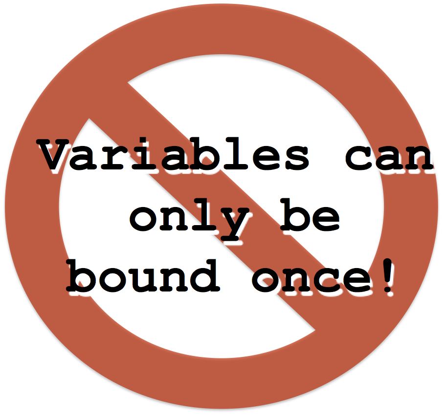

0 10 100000000 -234 16#AB10F 2#1010 $a $A $\n
Erlang Solutions Ltd.
Basic Erlang I
Data Types
Variables
Complex Data Structures
Pattern Matching
Basic Erlang II
0 10 100000000 -234 16#AB10F 2#1010 $a $A $\n
B#Val is used to store numbers in base B
$Char is used for ascii values
$A is equivalent to 65
Large integers are converted to bignums
Max size depends on physical constraints:
RAM
Paging memory
17.368 -56.654 12.34E-10
Not efficiently implemented
Stored as a double
64-bit representation
Follows the IEEE 754 standard
january
fooBar
alfa21
start_with_lower_case
node@ramone
true
false
'January'
'a space'
'Anything inside quotes{}#@ \n\012'
'node@ramone.erlang.org'
Atoms are constant literals
Start with a lower case letter or are encapsulated by ' '
Any character code is allowed within an atom if using ' '
Letters, integers and _ are allowed if the atom starts with a lower case letter
true false 1 == 2 1 /= 2 1 == 1.0 1 =:= 1 1 =/= 1.0 1 < 2 a > z less < more is_boolean(9+6) is_boolean(true) not((1 < 3) and (2 == 2)) not((1 < 3) or (2 == 2)) not((1 < 3) xor (2 == 2))
No separate type for booleans: atoms true and false are used instead.
Operators (and, andalso, or, orelse, xor, not) accept true and false as if they actually were boolean types.
{123, bcd}
{123, def, abc}
{abc, {def, 123}, ghi}
{}
{person, 'Joe', 'Armstrong'}
{person, 'Mike', 'Williams'}
Tuples are used to denote data-types with a fixed number of items
Tuples of any size are allowed
Contain valid Erlang expressions
[1, 2, 3, 4, 5, 6, 7, eight, nine]
Lists are written beginning with a [ and ending with a ]
Elements are separated by commas
Used to store a variable number of items
Lists are dynamically sized
Strings in Erlang are lists of ASCII values
[january, february, march]
[123, def, abc]
[a,[b,[c,d,e],f],g]
[]
[{person, 'Joe', 'Armstrong'},
{person, 'Robert', 'Virding'},
{person, 'Mike', 'Williams'}]
[72,101,108,108,111,32,87,111,114,108,100]
[$H,$e,$l,$l,$o,$ ,$W,$o,$r,$l,$d]
"Hello World"
A recursive list definition consists of a head and a tail
Lists whose last tail term is [] are called:
proper lists or
well-formed lists
The tail can be any valid Erlang data type
Most Erlang programs manipulate proper lists
[one, two, three, four] [one, two, three, four | []] [one, two|[three, four]] [one, two|[three|[four|[]]]] [one|[two|[three|[four|[]]]]]
A_long_variable_name Flag Name2 DbgFlag _a_do_not_care_variable _
Variables can start with an uppercase letter or _
They may not contain any ‘funny characters’
_ alone is a don’t care variable
Its values are ignored and never bound

Variables are used to store values of data structures
The value of a variable can not be changed once it has been bound
There is no need to declare them. Just use them!
Erlang does not have a static type system
Types are determined at run time
[{{person, "Joe", "Armstrong"},
[{telephone_number, [3,5,9,7]},
{shoe_size, 42},
{pets, [{cat, tubby}, {cat, tiger}]},
{children, [{thomas, 5}, {claire, 1}]}]
},
{{person, "Mike", "Williams"},
[{shoe_size, 41},
{likes, [boats, beer]}]
}
].
Arbitrary complex data structures can be created by nesting other data structures
Data structures may contain bound variables
Data structures are created by writing them down
No explicit memory allocation or deallocation is needed
Allocated automatically
Deallocated by the garbage collector when no longer referenced.
Pattern = Expression
Pattern matching is used for:
Assigning values to variables
Controlling the execution flow of programs (if, case, function heads)
Extracting values from compound data types
The pattern can contain variables which are bound when the matching succeeds
The expression may not contain unbound variables
A = 10
Succeeds, binds A to 10
{B, C, D} = {10, foo, bar}
Succeeds, binds B to 10, C to foo and D to bar.
{E, E, foo} = {abc, abc, foo}
Succeeds, binds E to abc.
[H|T] = [1,2,3]
Succeeds, binds H to 1, T to [2,3].
A match must either succeed or fail
{A, A, B} = {abc, def, 123}
- fails
[A,B,C,D] = [1,2,3]
- fails
[A,B|C] = [1,2,3,4,5,6,7]
- succeeds, A=1, B=2, C=[3,4,5,6,7]
[H|T] = []
- fails
\{A, _, [B|_], {B}\} = \{abc, 23, [22, x], {22}\}
- Succeeds, A=abc, B=22
C = 10, {C, C, 13, D, _} = {10, 10, 13, 12, 15}
- Succeeds, D=12, C=10
Var = {person, 'Francesco', 'Cesarini'},
{person, Name, Surname} = Var
- Succeeds, Name='Francesco', Surname='Cesarini'
[Element|Tail] = [1,2,3,4]
- Succeeds, Element=1, Tail=[2,3,4]
Basic Erlang I
Data Types
Variables
Complex Data Structures
Pattern Matching
Basic Erlang II
Basic Erlang I
Basic Erlang II
Function Calls
Modules
module:function(Arg1, Arg2, ..., ArgN) function(Arg1, Arg2, ..., ArgN)
Erlang programs consist of functions that call each other
Functions are defined within modules
Function names and module names must be atoms
The arity of a function is its number of arguments.
circumference(R) ->
2 * math:pi() * R.
product(X, Y) -> X * Y.
product(X, Y, Z) -> X * Y * Z.
A function is defined as a collection of clauses
Variables are pattern matched in the function clause head
If pattern matching fails on a clause, the next one is tested
The first clause matched is used
The last expression executed in the clause body is returned
factorial(0) -> 1;
factorial(N) ->
N * factorial(N-1).
> factorial(3).
(matches N = 3 in clause 2)
== 3 * factorial(3-1)
(matches clause 2)
== 3 * 2 * factorial(2-1)
(matches clause 2)
== 3 * 2 * 1 * factorial(1-1)
(matches clause 1)
== 3 * 2 * 1 * 1
== 6
Pattern matching occurs in the function head
Unbound variables get bound after a successful pattern match
Variables are local to each clause
Variables are allocated and deallocated automatically
Modules are stored in files with the .erl suffix
The module and file names must be the same
You store the module demo in demo.erl
Modules are named with the -module(Name). directive
Exported functions can be called from outside the module
Use -export([Function/Arity, Function/Arity, …])
Local functions may only be called within the module
Prefix function calls with the module name when making a call from outside the module
Module:Fun(Arg1, …)
This is a fully qualified call
Basic Erlang I
Basic Erlang II
Function Calls
Modules